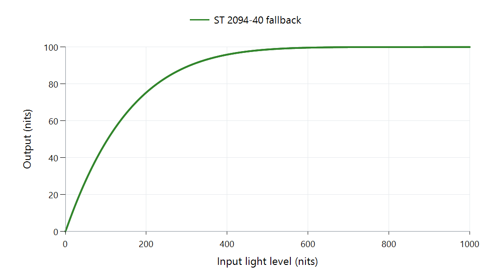

Tone Mapping Curve: ST 2094-40 in libplacebo
The ST 2094-40 mapper in libplacebo can use a content-supplied knee and Bézier curve anchors. It then adapts that prepared relationship to the actual output range. When those anchors are absent, the implementation constructs a fallback curve.
How an anchor changes the curved section
A knee specifies the transition into the upper mapping, with input and output coordinates. The section above it is normalized between that transition and its endpoint. Bézier controls shape how the output travels between those ends.
For a simple mathematical illustration, a quadratic section with endpoint controls zero and one and middle control a is:
B(t) = 2a × t(1−t) + t²
At t = 0.5, a = 0.25 gives output 0.375, while a = 0.75 gives 0.625. Both sections still start at zero and end at one. Moving a control changes the middle shape rather than changing those endpoints. The controls shape the curve; they are not ordinary measured image samples that the curve must pass through.
Actual metadata defines its knee, anchor set, and target under the standard's conventions. The mapper accounts for a destination whose peak differs from that prepared target. It can also use source brightness information when a content-provided curve is unavailable.
Read the missing-anchor case explicitly

libplacebo 7.360.1 fallback, defaults, 1,000-nit source, 100-nit target, zero black, no scene average or curve-anchor metadata.
The displayed fallback maps 100 nits to approximately 48.42 nits and 500 to approximately 98.68. This shows one generated relationship under those inputs. A real metadata-defined relationship can select another shape.
Follow the available information
| Information reaching the mapper | Operation available |
|---|---|
| Knee, anchors, and their target | Adapt the prepared content curve |
| Source statistics | Use them in brightness matching or curve construction |
| No complete anchor set | Use the implementation's fallback construction |
HDR10+ supplies its prepared dynamic information through the delivery path. An Emby comparison needs to distinguish selecting this mapping function from actually delivering its source metadata to the function. Decoder and renderer boundaries determine that second part. The plotted caption identifies the specific fallback case so its shape can be interpreted correctly.